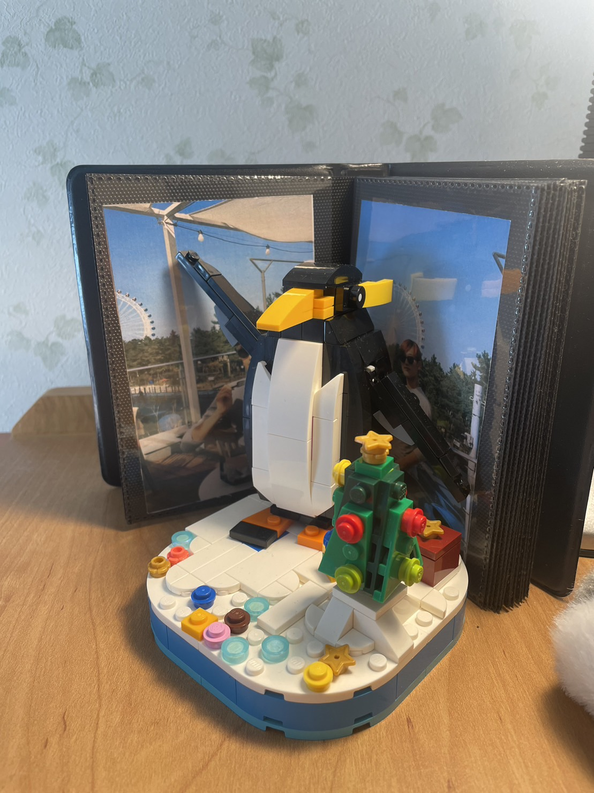
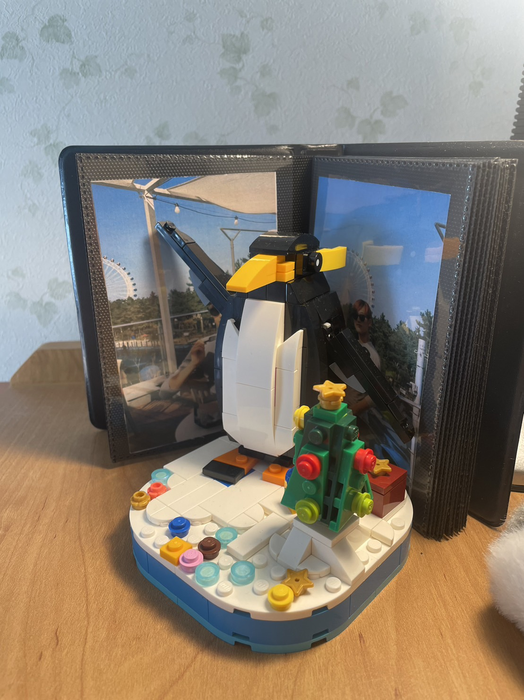
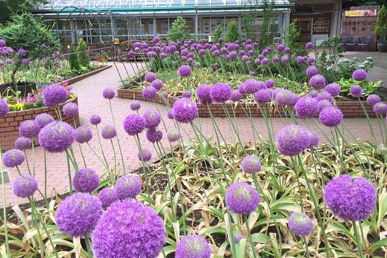

일본여행 추천 웹사이트
사랑스로운 누와 동생의 여행
[[[사랑해🌷]]]
코멘트 기능 너무 어려워 .... 😢

 

동생이 추천하는 일본 음식과 광광지를 올리겠습니다.

Recently, I learned how to use chatGPT and the right purpose of using it. It's not a method of serching something but make him think theoritically by giving conditions. So Im pracricng to use it effectively.
동생이 추천하는 일본 음식과 광광지를 올리겠습니다.
No.1 shinrinkoen
꽃 많이 볼수 있어：
Sinrinkouen

Sinrinkouen
No.2 ikebukuro
릿교 and ...：
Ikebukuro
Ikebukuro
더 생각 하고 올릴게용〜